Binomial GLMs are appropriate when the outcome is a count from zero to some known upper bound. If you can analogize the data to the globe tossing model, then you should use a binomial GLM. But often the upper bound isn’t known. Instead the counts never get close to any upper limit. For example, if we go fishing and return with 17 fish, what was the theoretical maximum? Whatever it is, it isn’t in our data. How do we model the fish counts?
Like binomial models, in whcih the number of trials is unknown and very large, but the probability the event happens is very small. lambda is the average number of events. The variance is also lambda.
Famous dataset of Prussian soliders getting killed by horse kicks.
11.2.1. Example: Oceanic tools complexity
Michelle does ethnographic field work. Interestd in Oceania as a natural experiment in cultutral evolution. Theoretical model that says that cultural evolution is proportional to the logarithm of population size. Even these islands have a small population, they might have a high contact rate.
data(Kline, package = "rethinking")
d <- Kline
rm(Kline)
d## culture population contact total_tools mean_TU
## 1 Malekula 1100 low 13 3.2
## 2 Tikopia 1500 low 22 4.7
## 3 Santa Cruz 3600 low 24 4.0
## 4 Yap 4791 high 43 5.0
## 5 Lau Fiji 7400 high 33 5.0
## 6 Trobriand 8000 high 19 4.0
## 7 Chuuk 9200 high 40 3.8
## 8 Manus 13000 low 28 6.6
## 9 Tonga 17500 high 55 5.4
## 10 Hawaii 275000 low 71 6.6We’ll want to use regularization to damp down overfitting, as always. But as you’ll see, a lot can still be learned from these data. Any rules you’ve been taught about minimum sample sizes for inference are just non-Bayesian superstitions. If you get the prior back, then the data aren’t enough. It’s that simple.
First make some new columns with the standardized log of population and an index variable for contact:
d <-
d %>%
mutate(log_pop_std = (log(population) - mean(log(population))) / sd(log(population)),
cid = contact)We’ll use a Poisson GLM to model this. Our link is a log-link. This ensures that a parameter is positive. Lambda has to be positive because it’s an expected count.
Can’t have a negative expected count. Maps all negative real numbers to the 0,1 interval. e^0 is 1. All of the positive real numbers get mapped from 1 to infinity. It’s really explosive. Literally exponential. We exponentiate the curve. 0 or the left scale is mapped to 1. So you get a massive compression of small numbers. And the other half is 1 to infinity. Hard to have intuitions about it, so we should simulate.
Need to do prior predictive simulation because of this explosive scaling. Play with some rudimentary Poisson with something ‘benign’ liek Normal(0,10). Plotted that distribution in black. Doesn’t look very flat. The mean of this distribution. The tail goes for a very long time. So something like norm(3, 0.5) gives something that we see in these kinds of archaeological datasets. At least now the prior mean isn’t in the billions. 9^12 is a lot of tools. An island full of tools.
I encourage you to play around with the curve code above, trying different means and standard deviations. The fact to appreciate is that a log link puts half of the real numbers—the negative numbers—between 0 and 1 on the outcome scale.
Here’s my weakly informative suggestion:
tibble(x = c(3, 22),
y = c(0.055, 0.04),
meanlog = c(0, 3),
sdlog = c(10, 0.5)) %>%
expand(nesting(x, y, meanlog, sdlog),
number = seq(from = 0, to = 100, length.out = 200)) %>%
mutate(density = dlnorm(number, meanlog, sdlog),
group = str_c("alpha%~%Normal(", meanlog, ", ", sdlog, ")")) %>%
ggplot(aes(fill = group, color = group)) +
geom_area(aes(x = number, y = density),
alpha = 3/4, size = 0, position = "identity") +
geom_text(data = . %>% group_by(group) %>% slice(1),
aes(x = x, y = y, label = group),
family = "Times", parse = T, hjust = 0) +
scale_fill_manual(values = wes_palette("Moonrise2")[1:2]) +
scale_color_manual(values = wes_palette("Moonrise2")[1:2]) +
scale_y_continuous(NULL, breaks = NULL) +
xlab("mean number of tools") +
theme(legend.position = "none")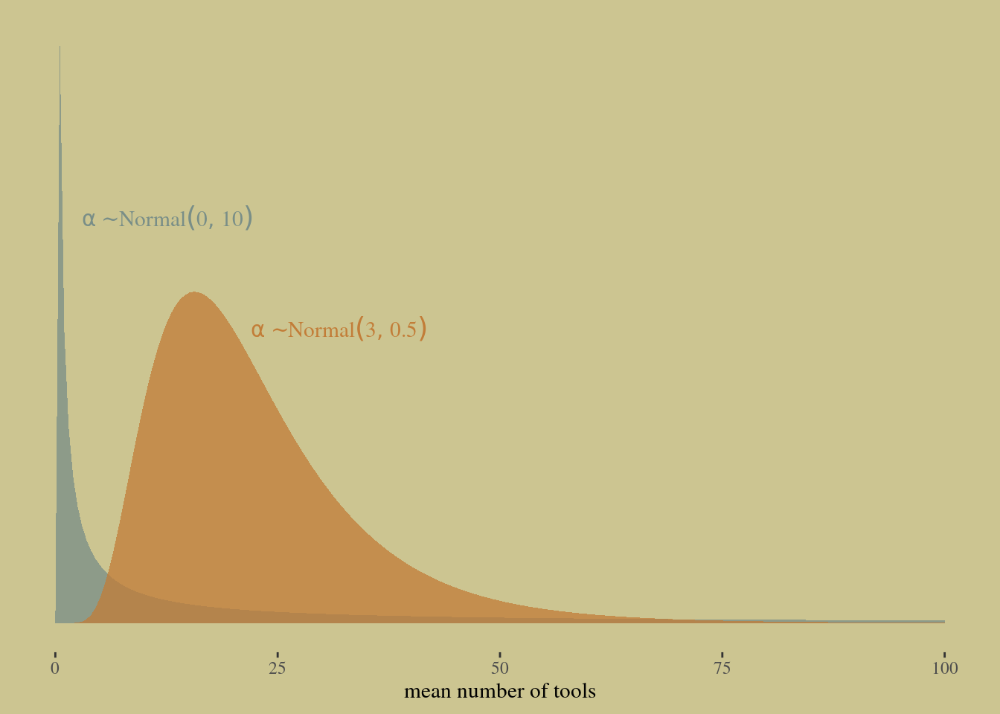
On the left we have the slopes for the log population. If we put a normal(0,10) prior, it’s explosive. That’s a problem. Expect that you’ll get a billion tools again. On the right something a lot tighter with 0.2, and a lot flatter on the outcome scale. WIth a GLM, if it’s flat ont he linear model scale, it’s not going to be falt on the outcome scale. But you hav ethe power of prior predictive simulation to sort this out.
tibble(x = c(10, 4),
y = c(0.05, 0.5),
mean = c(0, 3),
sd = c(10, 0.5)) %>%
expand(nesting(x, y, mean, sd),
number = seq(from = -25, to = 25, length.out = 500)) %>%
mutate(density = dnorm(number, mean, sd),
group = str_c("alpha%~%Normal(", mean, ", ", sd, ")")) %>%
ggplot(aes(fill = group, color = group)) +
geom_area(aes(x = number, y = density),
alpha = 3/4, size = 0, position = "identity") +
geom_text(data = . %>% group_by(group) %>% slice(1),
aes(x = x, y = y, label = group),
family = "Times", parse = T, hjust = 0) +
scale_fill_manual(values = wes_palette("Moonrise2")[1:2]) +
scale_color_manual(values = wes_palette("Moonrise2")[1:2]) +
scale_y_continuous(NULL, breaks = NULL) +
xlab(expression(lambda~scale)) +
theme(legend.position = "none")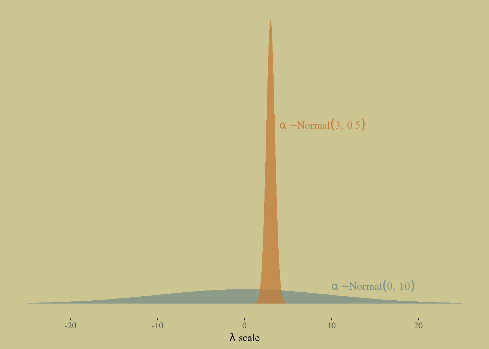
This prior is terrible. Of course you will be able to confirm, once we start fitting models, that even 10 observations can overcome these terrible priors. But please remember that we are practicing for when it does matter.
So let’s try something much tighter.
set.seed(11)
# how many lines would you like?
n <- 100
# simulate and wrangle
tibble(i = 1:n,
a = rnorm(n, mean = 3, sd = 0.5)) %>%
mutate(`beta%~%Normal(0*', '*10)` = rnorm(n, mean = 0 , sd = 10),
`beta%~%Normal(0*', '*0.2)` = rnorm(n, mean = 0 , sd = 0.2)) %>%
pivot_longer(contains("beta"),
values_to = "b",
names_to = "prior") %>%
expand(nesting(i, a, b, prior),
x = seq(from = -2, to = 2, length.out = 100)) %>%
# plot
ggplot(aes(x = x, y = exp(a + b * x), group = i)) +
geom_line(size = 1/4, alpha = 2/3,
color = wes_palette("Moonrise2")[4]) +
labs(x = "log population (std)",
y = "total tools") +
coord_cartesian(ylim = c(0, 100)) +
facet_wrap(~ prior, labeller = label_parsed)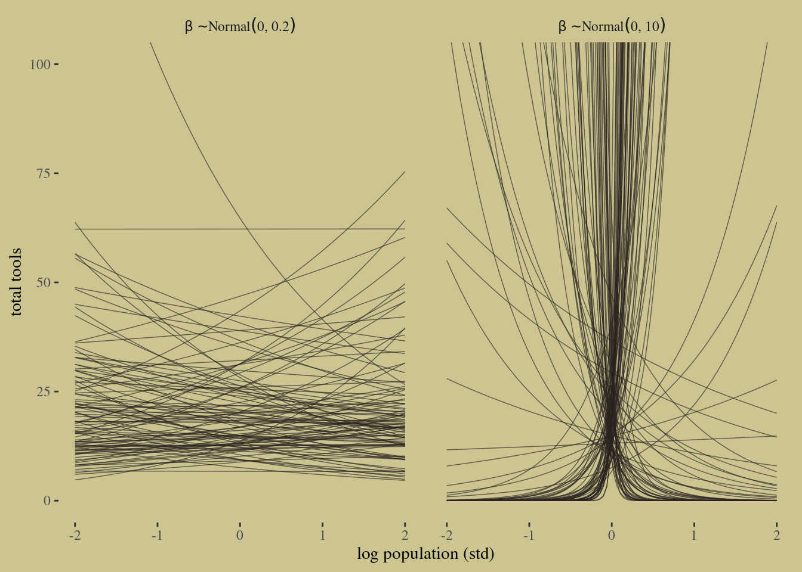
Let’s view them on the natural population scale:
set.seed(11)
prior <-
tibble(i = 1:n,
a = rnorm(n, mean = 3, sd = 0.5),
b = rnorm(n, mean = 0, sd = 0.2)) %>%
expand(nesting(i, a, b),
x = seq(from = log(100), to = log(200000), length.out = 100))
# left
p1 <-
prior %>%
ggplot(aes(x = x, y = exp(a + b * x), group = i)) +
geom_line(size = 1/4, alpha = 2/3,
color = wes_palette("Moonrise2")[4]) +
labs(subtitle = expression(beta%~%Normal(0*', '*0.2)),
x = "log population",
y = "total tools") +
coord_cartesian(xlim = c(log(100), log(200000)),
ylim = c(0, 500))
# right
p2 <-
prior %>%
ggplot(aes(x = exp(x), y = exp(a + b * x), group = i)) +
geom_line(size = 1/4, alpha = 2/3,
color = wes_palette("Moonrise2")[4]) +
labs(subtitle = expression(beta%~%Normal(0*', '*0.2)),
x = "population",
y = "total tools") +
coord_cartesian(xlim = c(100, 200000),
ylim = c(0, 500))
# combine
p1 | p2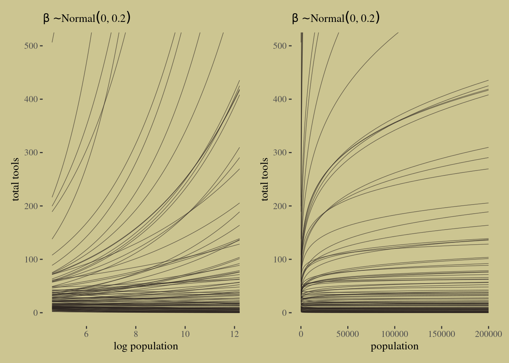
dpois is R’s Poisson. The top model is intercept only. The model of interest at the bottom.
Okay, finally we can approximate some posterior distributions.
# intercept only
b11.9 <-
brm(data = d,
family = poisson,
total_tools ~ 1,
prior(normal(3, 0.5), class = Intercept),
iter = 2000, warmup = 1000, chains = 4, cores = 4,
seed = 11,
file = "fits/b11.09")
# interaction model
b11.10 <-
brm(data = d,
family = poisson,
bf(total_tools ~ a + b * log_pop_std,
a + b ~ 0 + cid,
nl = TRUE),
prior = c(prior(normal(3, 0.5), nlpar = a),
prior(normal(0, 0.2), nlpar = b)),
iter = 2000, warmup = 1000, chains = 4, cores = 4,
seed = 11,
file = "fits/b11.10") print(b11.9)## Family: poisson
## Links: mu = log
## Formula: total_tools ~ 1
## Data: d (Number of observations: 10)
## Samples: 4 chains, each with iter = 2000; warmup = 1000; thin = 1;
## total post-warmup samples = 4000
##
## Population-Level Effects:
## Estimate Est.Error l-95% CI u-95% CI Rhat Bulk_ESS Tail_ESS
## Intercept 3.54 0.05 3.44 3.65 1.00 1815 1498
##
## Samples were drawn using sampling(NUTS). For each parameter, Bulk_ESS
## and Tail_ESS are effective sample size measures, and Rhat is the potential
## scale reduction factor on split chains (at convergence, Rhat = 1).print(b11.10)## Family: poisson
## Links: mu = log
## Formula: total_tools ~ a + b * log_pop_std
## a ~ 0 + cid
## b ~ 0 + cid
## Data: d (Number of observations: 10)
## Samples: 4 chains, each with iter = 2000; warmup = 1000; thin = 1;
## total post-warmup samples = 4000
##
## Population-Level Effects:
## Estimate Est.Error l-95% CI u-95% CI Rhat Bulk_ESS Tail_ESS
## a_cidhigh 3.61 0.07 3.47 3.75 1.00 3941 2746
## a_cidlow 3.32 0.09 3.14 3.48 1.00 3300 2786
## b_cidhigh 0.19 0.16 -0.13 0.50 1.00 3907 2481
## b_cidlow 0.38 0.05 0.27 0.48 1.00 3051 2756
##
## Samples were drawn using sampling(NUTS). For each parameter, Bulk_ESS
## and Tail_ESS are effective sample size measures, and Rhat is the potential
## scale reduction factor on split chains (at convergence, Rhat = 1).Let’s look at the PSIS model comparison quickly, just to flag two important facts.
b11.9 <- brms::add_criterion(b11.9, "loo")
b11.10 <- brms::add_criterion(b11.10, "loo")
brms::loo_compare(b11.9, b11.10, criterion = "loo") %>% print(simplify = F)## elpd_diff se_diff elpd_loo se_elpd_loo p_loo se_p_loo looic se_looic
## b11.10 0.0 0.0 -42.7 6.6 7.0 2.6 85.4 13.2
## b11.9 -27.8 16.3 -70.5 16.6 8.0 3.5 141.0 33.3brms::model_weights(b11.9, b11.10, weights = "loo") %>% round(digits = 2)## b11.9 b11.10
## 0 1loo::loo(b11.10) %>% loo::pareto_k_table()## Pareto k diagnostic values:
## Count Pct. Min. n_eff
## (-Inf, 0.5] (good) 6 60.0% 1225
## (0.5, 0.7] (ok) 2 20.0% 233
## (0.7, 1] (bad) 2 20.0% 40
## (1, Inf) (very bad) 0 0.0% <NA>tibble(culture = d$culture,
k = b11.10$criteria$loo$diagnostics$pareto_k) %>%
arrange(desc(k)) %>%
mutate_if(is.double, round, digits = 2)## # A tibble: 10 × 2
## culture k
## <fct> <dbl>
## 1 Hawaii 0.96
## 2 Tonga 0.77
## 3 Yap 0.6
## 4 Trobriand 0.56
## 5 Tikopia 0.39
## 6 Malekula 0.37
## 7 Santa Cruz 0.32
## 8 Lau Fiji 0.31
## 9 Chuuk 0.09
## 10 Manus 0.08cultures <- c("Hawaii", "Tonga", "Trobriand", "Yap")
library(ggrepel)
nd <-
distinct(d, cid) %>%
expand(cid,
log_pop_std = seq(from = -4.5, to = 2.5, length.out = 100))
f <-
fitted(b11.10,
newdata = nd,
probs = c(.055, .945)) %>%
data.frame() %>%
bind_cols(nd)
p1 <-
f %>%
ggplot(aes(x = log_pop_std, group = cid, color = cid)) +
geom_smooth(aes(y = Estimate, ymin = Q5.5, ymax = Q94.5, fill = cid),
stat = "identity",
alpha = 1/4, size = 1/2) +
geom_point(data = bind_cols(d, b11.10$criteria$loo$diagnostics),
aes(y = total_tools, size = pareto_k),
alpha = 4/5) +
geom_text_repel(data =
bind_cols(d, b11.10$criteria$loo$diagnostics) %>%
filter(culture %in% cultures) %>%
mutate(label = str_c(culture, " (", round(pareto_k, digits = 2), ")")),
aes(y = total_tools, label = label),
size = 3, seed = 11, color = "black", family = "Times") +
labs(x = "log population (std)",
y = "total tools") +
coord_cartesian(xlim = range(b11.10$data$log_pop_std),
ylim = c(0, 80))
p2 <-
f %>%
mutate(population = exp((log_pop_std * sd(log(d$population))) + mean(log(d$population)))) %>%
ggplot(aes(x = population, group = cid, color = cid)) +
geom_smooth(aes(y = Estimate, ymin = Q5.5, ymax = Q94.5, fill = cid),
stat = "identity",
alpha = 1/4, size = 1/2) +
geom_point(data = bind_cols(d, b11.10$criteria$loo$diagnostics),
aes(y = total_tools, size = pareto_k),
alpha = 4/5) +
scale_x_continuous("population", breaks = c(0, 50000, 150000, 250000)) +
ylab("total tools") +
coord_cartesian(xlim = range(d$population),
ylim = c(0, 80))
(p1 | p2) &
scale_fill_manual(values = wes_palette("Moonrise2")[1:2]) &
scale_color_manual(values = wes_palette("Moonrise2")[1:2]) &
scale_size(range = c(2, 5)) &
theme(legend.position = "none")Figure 11.9
We can compare the two. This shows that once you get into GLMs, the efffective number of parameters have very little to do with the actual parameter count. The law in GLMs. All that nice relationship in Gausssian, which is a measure of your overfitting risk, is correlated with yoiur paramter count. Why? Ceiling and floor effects. LOO will still measure your overfitting risk. The model with more parameters has less overfitting risk that the model with only one parameter.
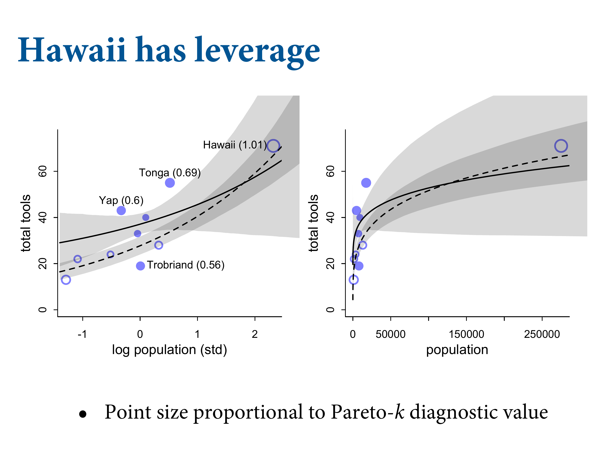
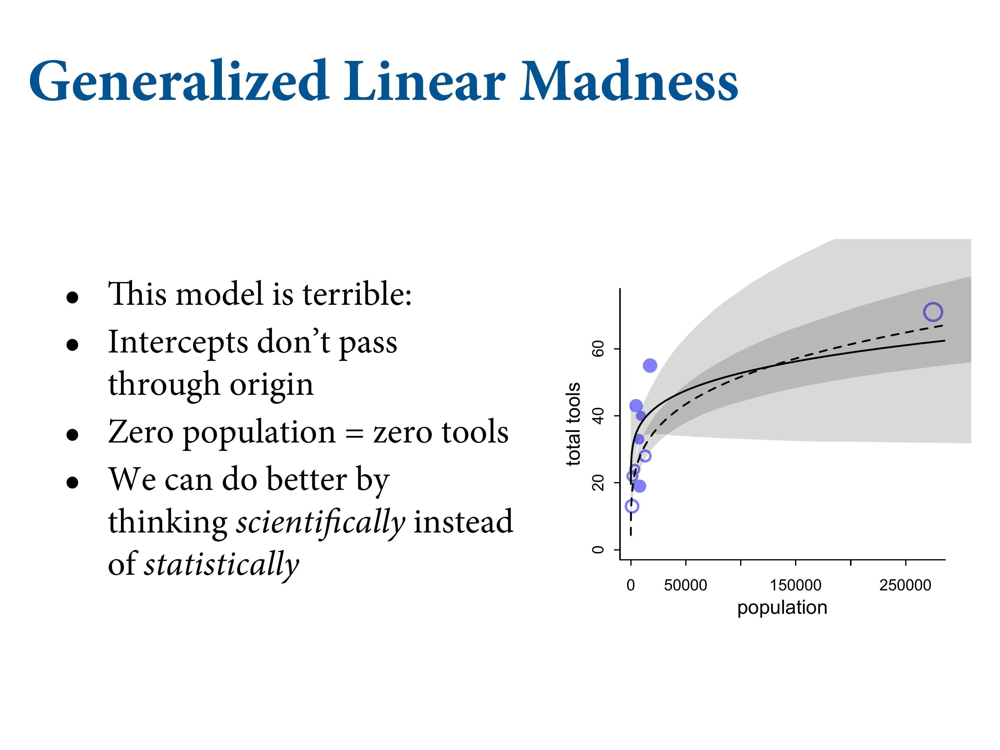
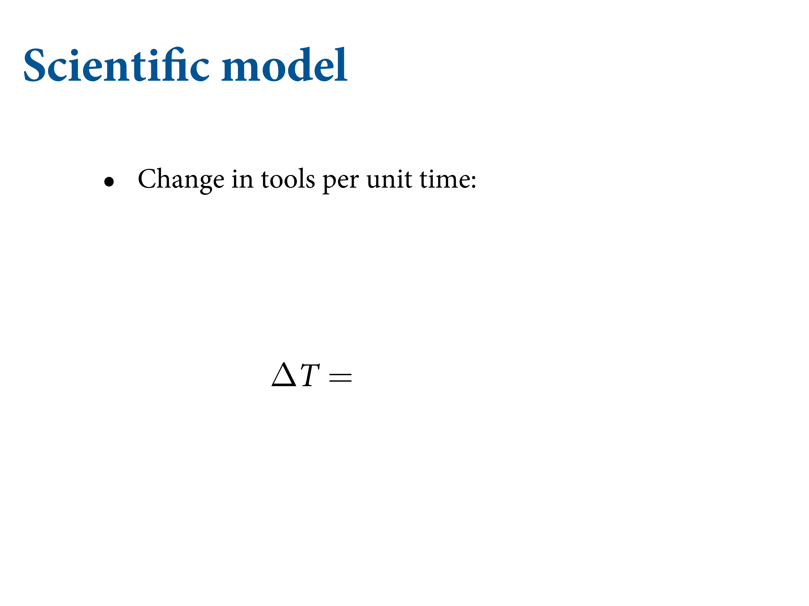
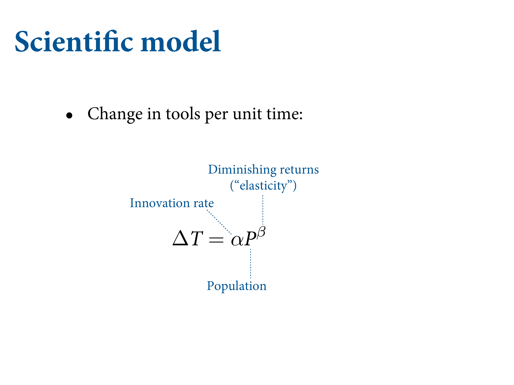
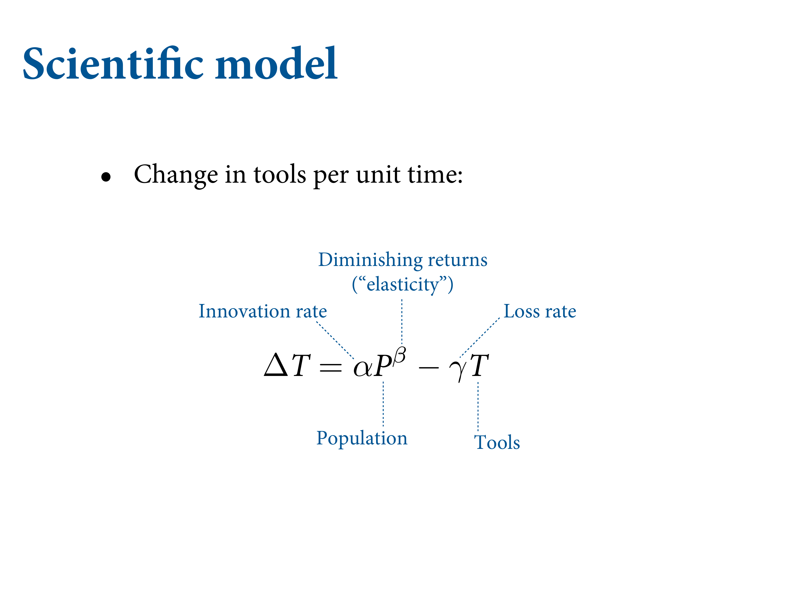
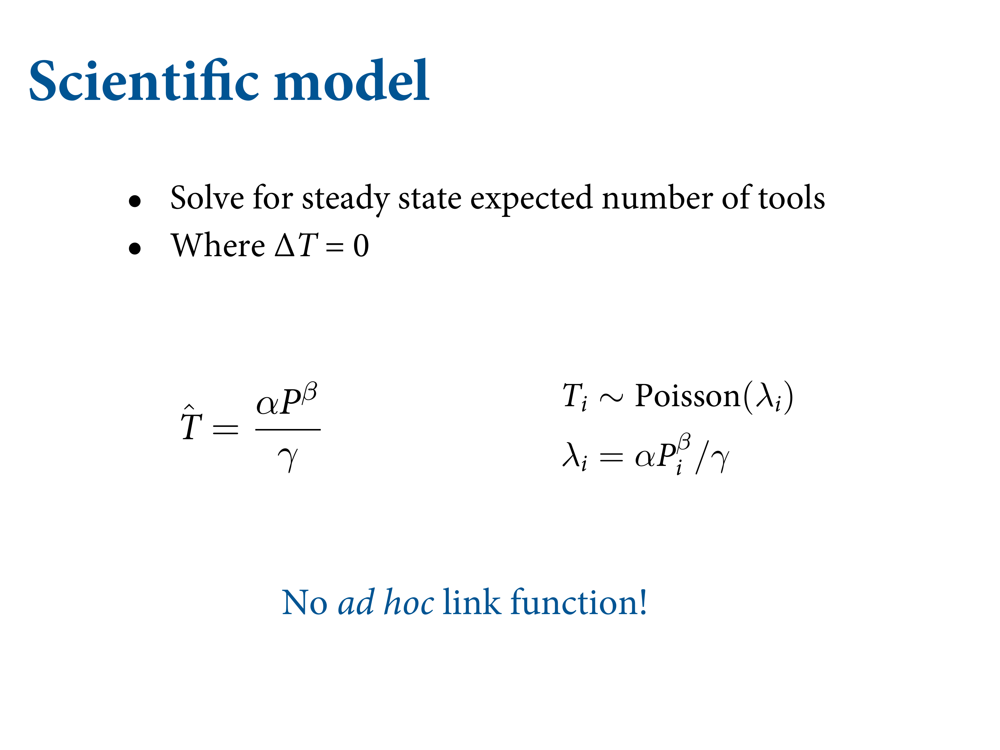
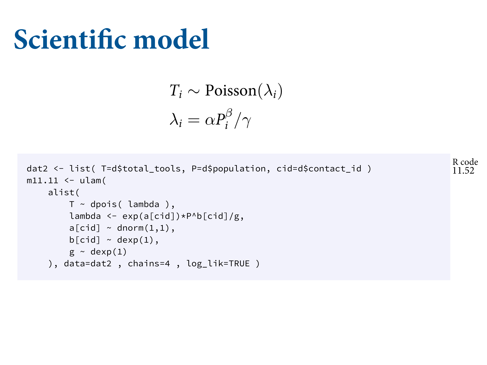
b11.11 <-
brm(data = d,
family = poisson(link = "identity"),
bf(total_tools ~ exp(a) * population^b / g,
a + b ~ 0 + cid,
g ~ 1,
nl = TRUE),
prior = c(prior(normal(1, 1), nlpar = a),
prior(exponential(1), nlpar = b, lb = 0),
prior(exponential(1), nlpar = g, lb = 0)),
iter = 2000, warmup = 1000, chains = 4, cores = 4,
seed = 11,
#control = list(adapt_delta = .95),
file = "fits/b11.11") print(b11.11)## Family: poisson
## Links: mu = identity
## Formula: total_tools ~ exp(a) * population^b/g
## a ~ 0 + cid
## b ~ 0 + cid
## g ~ 1
## Data: d (Number of observations: 10)
## Samples: 4 chains, each with iter = 2000; warmup = 1000; thin = 1;
## total post-warmup samples = 4000
##
## Population-Level Effects:
## Estimate Est.Error l-95% CI u-95% CI Rhat Bulk_ESS Tail_ESS
## a_cidhigh 0.93 0.86 -0.77 2.60 1.00 1939 1503
## a_cidlow 0.95 0.68 -0.44 2.27 1.00 1745 1736
## b_cidhigh 0.30 0.10 0.09 0.50 1.00 1531 991
## b_cidlow 0.26 0.04 0.19 0.33 1.00 1978 1596
## g_Intercept 1.20 0.82 0.24 3.29 1.00 1710 1736
##
## Samples were drawn using sampling(NUTS). For each parameter, Bulk_ESS
## and Tail_ESS are effective sample size measures, and Rhat is the potential
## scale reduction factor on split chains (at convergence, Rhat = 1).#b11.11 <- brms::add_criterion(b11.11, criterion = "loo", moment_match = T)
#loo(b11.11)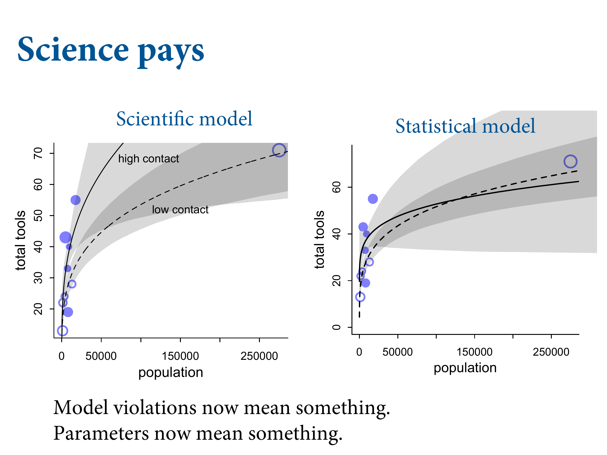
11.2.2. Negative binomial (gamma-Poisson) models
11.2.3. Example: Exposure and the offset
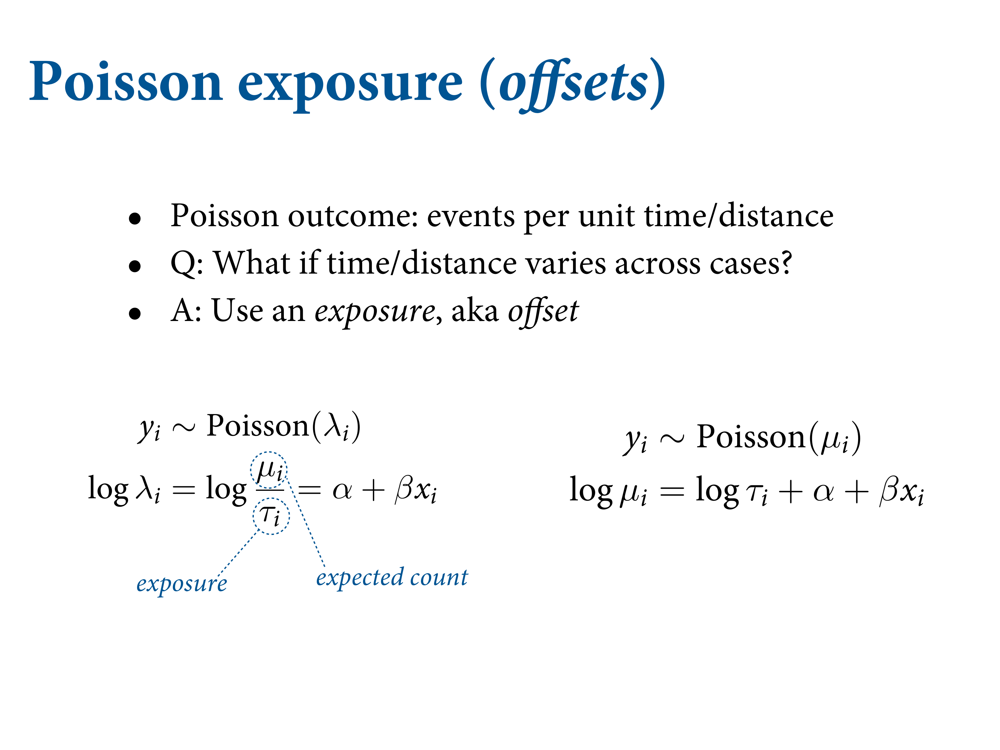
The parameter \(\lambda\) is the expected value of a Poisson model, but it’s also commonly thought of as a rate. Both interpretations are correct, and realizing this allows us to make Poisson models for which the EXPOSURE varies across cases i.
Suppose you own a monastery. The data available to you about the rate at which manuscripts are completed is totaled up each day. Suppose the true rate is \(\lambda = 1.5\) manuscripts per day. We can simulate a month of daily counts:
set.seed(11)
num_days <- 30
y <- rpois(num_days, lambda = 1.5)
num_weeks <- 4
y_new <- rpois(num_weeks, lambda = 0.5 * 7)So now y holds 30 days of simulated counts of completed manuscripts.
Also suppose that your monastery is turning a tidy profit, so you are considering purchasing another monastery. Before purchasing, you’d like to know how productive the new monastery might be. Unfortunately, the current owners don’t keep daily records, so a head-to-head comparison of the daily totals isn’t possible. Instead, the owners keep weekly totals. Suppose the daily rate at the new monastery is actually \(\lambda = 0.5\) manuscripts per day. To simulate data on a weekly basis, we just multiply this average by 7, the exposure:
(
d <-
tibble(y = c(y, y_new),
days = rep(c(1, 7), times = c(num_days, num_weeks)), # this is the exposure
monastery = rep(0:1, times = c(num_days, num_weeks))) %>%
mutate(log_days = log(days))
)## # A tibble: 34 × 4
## y days monastery log_days
## <int> <dbl> <int> <dbl>
## 1 1 1 0 0
## 2 0 1 0 0
## 3 1 1 0 0
## 4 0 1 0 0
## 5 0 1 0 0
## 6 4 1 0 0
## 7 0 1 0 0
## 8 1 1 0 0
## 9 3 1 0 0
## 10 0 1 0 0
## # … with 24 more rowsAnd new y_new holds four weeks of counts of completed manuscripts.
To analyze both y, totaled up daily, and y_new, totaled up weekly, we just add the logarithm of the exposure to linear model. First, let’s build a data frame to organize the counts and help you see the exposure for each case:
b11.12 <-
brm(data = d,
family = poisson,
y ~ 1 + offset(log_days) + monastery,
prior = c(prior(normal(0, 1), class = Intercept),
prior(normal(0, 1), class = b)),
iter = 2000, warmup = 1000, cores = 4, chains = 4,
seed = 11,
file = "fits/b11.12")print(b11.12)## Family: poisson
## Links: mu = log
## Formula: y ~ 1 + offset(log_days) + monastery
## Data: d (Number of observations: 34)
## Samples: 4 chains, each with iter = 2000; warmup = 1000; thin = 1;
## total post-warmup samples = 4000
##
## Population-Level Effects:
## Estimate Est.Error l-95% CI u-95% CI Rhat Bulk_ESS Tail_ESS
## Intercept -0.01 0.18 -0.37 0.33 1.00 1992 2093
## monastery -0.88 0.32 -1.55 -0.29 1.00 2308 2370
##
## Samples were drawn using sampling(NUTS). For each parameter, Bulk_ESS
## and Tail_ESS are effective sample size measures, and Rhat is the potential
## scale reduction factor on split chains (at convergence, Rhat = 1).To compute the posterior distributions of λ in each monastery, we sample from the posterior and then just use the linear model, but without the offset now. We don’t use the offset again, when computing predictions, because the parameters are already on the daily scale, for both monasteries.
brms::posterior_samples(b11.12) %>%
mutate(lambda_old = exp(b_Intercept),
lambda_new = exp(b_Intercept + b_monastery)) %>%
pivot_longer(contains("lambda")) %>%
mutate(name = factor(name, levels = c("lambda_old", "lambda_new"))) %>%
group_by(name) %>%
mean_hdi(value, .width = .89) %>%
mutate_if(is.double, round, digits = 2)## # A tibble: 2 × 7
## name value .lower .upper .width .point .interval
## <fct> <dbl> <dbl> <dbl> <dbl> <chr> <chr>
## 1 lambda_old 1.01 0.73 1.29 0.89 mean hdi
## 2 lambda_new 0.43 0.24 0.6 0.89 mean hdi